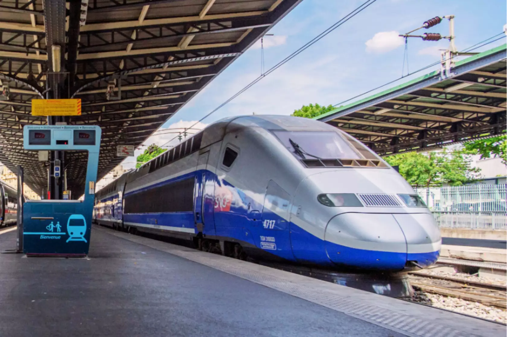

"Fueling Your Journey on the Rails of Passion."
Welcome to Track Passion, your go-to source for the latest updates in the world of trains! From high-speed rail developments to advancements in sustainable train technology, we cover the innovations shaping modern rail travel. Dive in to explore the engineering marvels and timeless appeal of trains worldwide.

Shinkansen
Nicknamed the “bullet train,” the Shinkansen is famous for its incredible speed and sleek design, revolutionizing rail travel in Japan.Learn more.

TGV
One of the fastest trains in Europe, the TGV connects cities across France with efficient high-speed service and has become a symbol of French engineering.Learn more.

ICE
Germany’s flagship high-speed train, the ICE, offers seamless travel across the country and into neighboring nations with an emphasis on comfort and modern technology.Learn more.

 trains.
trains.